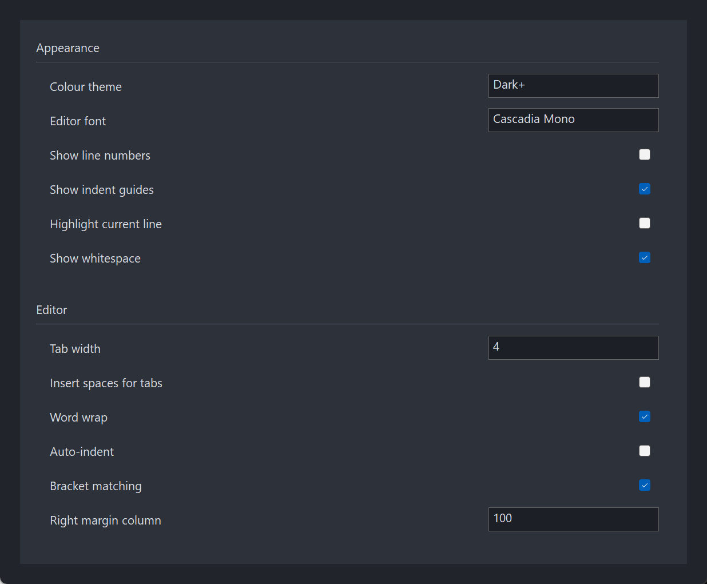

PsScrollPanel
A scrolling panel for FreeBASIC Win32 applications: a viewport onto a page of ordinary child controls that is taller than the space available for it, with a vertical scrollbar in a reserved strip down the right edge.
It is the container behind a settings dialog whose list of options runs past one screen. You build your page of labels, checkboxes and edit boxes exactly as you would on a plain window, lay them out once, and the control does the scrolling by moving the whole page underneath the viewport. Your controls keep the coordinates you gave them, forever.
The scrollbar's thumb is normally invisible. It appears when the cursor is over the control or when something on the page has the focus, so the scrollbar reads as a hint rather than as furniture — but the strip it lives in is always reserved, so nothing on your page ever shifts sideways.
The one thing to get right: your controls are parented to PsScrollPanel_GetPanel(), never to the control's own handle. A control created on the control itself sits over the viewport and never scrolls.
What it looks like

A settings page taller than its viewport. The scrollbar is not visible here, and that is correct — the thumb appears only when the content overflows and the pointer is over the control or focus is inside the page. The strip it lives in stays reserved either way, so nothing on the page shifts when it appears. The host parents its controls to the panel, never to the container.
Requirements
Files to copy into your project:
| File | Purpose |
|---|---|
PsScrollPanel.bi | Declarations — types, callbacks, constants, function prototypes |
PsScrollPanel.inc | Implementation |
PsVScrollBar.bi | The vertical scrollbar the control creates and owns |
PsVScrollBar.inc | Its implementation |
PsBufferPaint.bi | The flicker-free drawing surface both controls paint through |
PsBufferPaint.inc | Its implementation |
AfxNova is required. The control is built on CWindow, and PsBufferPaint draws through AfxNova\CGdiPlus.inc. Sources include AfxNova relative to the workspace root (#include once "AfxNova\CWindow.inc"), so builds need the workspace root on the include path:
fbc64.exe -i "C:\dev" main.basInclude order. PsScrollPanel.bi pulls in PsBufferPaint.bi and PsVScrollBar.bi for the types it names, but the three implementation files must be included in dependency order:
#include once "PsBufferPaint.inc"
#include once "PsVScrollBar.inc"
#include once "PsScrollPanel.inc"GDI+ must be running before the first repaint and must outlive the last one. Both controls render their geometry through GDI+, so bracket your message loop:
dim as ULONG_PTR gdipToken = AfxGdipInit()
' ... create windows, run the message loop ...
AfxGdipShutdown( gdipToken )AfxGdipShutdown must come after every window is destroyed, because each repaint builds and tears down a PsBufferPaint.
Never name an identifier ok. GDI+ defines Ok = 0 as a Status enum value in namespace AfxNova, and hosts customarily say using AfxNova. An existing variable, parameter or function called ok becomes a duplicate definition the moment you adopt these files. Use bOK instead.
There is no message-filter obligation. The control installs no pump filter and exports none: it needs nothing from your message loop in order to work.
For Tab navigation into the page, call IsDialogMessage in your message pump. The controls on the page are ordinary tabstops, and only the dialog manager moves focus between them:
do while GetMessage( @uMsg, null, 0, 0 )
if uMsg.message = WM_QUIT then exit do
if IsDialogMessage( hWndForm, @uMsg ) = 0 then
TranslateMessage @uMsg
DispatchMessage @uMsg
end if
loopBoth of the control's own windows already carry WS_EX_CONTROLPARENT, which is what allows IsDialogMessage to recurse past the viewport and reach the page. Without the pump call, Tab does nothing inside the page — and the focus-into-view scroll goes with it, since nothing ever changes focus.
Host obligations, in full
- Parent your controls to
PsScrollPanel_GetPanel(), never to the control itself. - Bracket your message loop with
AfxGdipInit/AfxGdipShutdown. - Never name an identifier
ok. - Call
IsDialogMessagein your pump if you want Tab to reach the page. - Tell the control how tall the page is — return a height from the layout callback, or call
PsScrollPanel_SetContentHeight/PsScrollPanel_AutoSizeContent. Left at 0, the page is stretched to the viewport and nothing scrolls. - Call
PsScrollPanel_Recalcafter adding, removing, hiding or moving children outside of a resize. The control does not watch the page for you. - Keep ownership of any
HFONTyou pass toPsScrollPanel_SetFont. The control never deletes it, and it must outlive the page.
Quick start
' 1. Create it, theme it, wire it up. Created zero-sized and hidden.
ghScrollPanel = PsScrollPanel_Create( HWND_FRMMAIN, IDC_FRMMAIN_SCROLLPANEL )
PsScrollPanel_SetColors( ghScrollPanel, theme.BackColorBox, theme.ForeColor )
PsScrollPanel_SetScrollBarColors( ghScrollPanel, theme.BackColorBox, _
theme.ForeColorScrollBar, theme.ForeColorScrollBarHot )
PsScrollPanel_SetLayoutCallback( ghScrollPanel, @ScrollPanel_Layout )
PsScrollPanel_SetLineHeight( ghScrollPanel, ROW_HEIGHT + ROW_GAP ) ' one notch ~ 3 rows
' 2. Build the page. EVERY control is parented to the PANEL, never to ghScrollPanel.
dim as HWND hPage = PsScrollPanel_GetPanel( ghScrollPanel )
hChk = CreateWindowExW( 0, @wstr("BUTTON"), @wstr("Word wrap"), _
WS_CHILD or WS_VISIBLE or WS_TABSTOP or BS_AUTOCHECKBOX, _
0, 0, 0, 0, hPage, _
cast(HMENU, cast(LONG_PTR, IDC_WRAP)), hInst, NULL )
' 3. Font the page, once it is built.
PsScrollPanel_SetFont( ghScrollPanel, ghFont(GUIFONT_9) )
' 4. Size and show it. The layout callback runs from here and on every later resize.
SetWindowPos( ghScrollPanel, 0, x, y, cx, cy, SWP_NOZORDER or SWP_SHOWWINDOW )And the layout callback — the only place your controls are ever positioned:
function ScrollPanel_Layout( byval hPanel as HWND, byval cxPanel as integer ) as integer
dim as integer y = 16
SetWindowPos( hChk, 0, 16, y, cxPanel - 32, 24, SWP_NOZORDER )
y += 34
' ... the rest of the page, in PAGE coordinates ...
return y + 16 ' the new content height. 0 = leave it unchanged.
end functionNotice what the callback does not do: it never touches the scroll position, never resizes the page window, and never calls GetClientRect( hPanel ) — the width it must lay out against is handed to it as cxPanel.
If you would rather not track the height yourself, position the controls and call PsScrollPanel_AutoSizeContent( h, padding ), which measures the deepest visible child.
That is the whole minimum. Everything below is refinement.
Concepts
Three windows
PsScrollPanel container HWND WS_CLIPCHILDREN -- this is the VIEWPORT
├── panel (CWindow) the PAGE. As tall as the content.
│ └── your controls parented HERE, laid out in PAGE coordinates, once
└── PsVScrollBar a reserved strip on the right edgePsScrollPanel_Create returns the container. It is an ordinary window handle, not an opaque type, so you place and size it with SetWindowPos and find it with GetDlgItem on the CtrlID you passed. The container's id is CtrlID; the panel takes CtrlID + 1 and the scrollbar CtrlID + 2.
PsScrollPanel_GetPanel returns the page, and that is the parent for everything you put on it. The page is as wide as the viewport minus the reserved strip, and as tall as the content height you declare (or the viewport, whichever is larger).
The control frees itself when its window is destroyed, including both child windows and the brush it hands to WM_CTLCOLOR*. Your controls are children of the page, so they are destroyed with it — do not DestroyWindow them yourself afterwards.
Scrolling moves the page
The scroll position is applied as SetWindowPos( hPanel, 0, -nPos, … ). The page's top edge in the container's client coordinates is always exactly -nPos. The container's WS_CLIPCHILDREN clips, and USER32 blits the whole subtree in one go.
The consequence is the point of the control: your controls are laid out exactly once per resize and never touched again. Scrolling repositions nothing, so a page of fifty controls scrolls as cheaply as a page of five, and your layout code never has to know the scroll position exists.
Everything is in pixels
Content height, scroll position, EnsureVisible margins, wheel step — all pixels, all in page coordinates. There are no lines, rows or scroll units to convert.
The two unscaled inputs are the strip width and the wheel line height: you pass those at 100% DPI and the control scales them at use.
Who owns layout
| Thing | Owner |
|---|---|
| Where your controls sit on the page | You, in the layout callback |
| How tall the page is | You, by return value or SetContentHeight / AutoSizeContent |
| The page's width, height and position | The control |
| The strip's rectangle | The control |
| The scroll position, and its clamping | The control |
The layout callback is called with the width the page is being given, before any of your code runs, so it can never reason about a stale width. Calling PsScrollPanel_SetContentHeight from inside it is safe: the control records the value rather than starting a second layout pass.
The thumb is normally invisible
The thumb is shown when:
there is something to scroll AND ( the cursor is over the control OR focus is on the page )Either of the last two alone is enough, so a keyboard-only user Tabbing through the page still sees where they are. PsScrollPanel_ShouldShow( bNeeds, bMouse, bFocus ) is that rule as a pure function, with the full truth table:
bNeeds | bMouse | bFocus | Result |
|---|---|---|---|
| FALSE | FALSE | FALSE | FALSE |
| FALSE | TRUE | FALSE | FALSE |
| FALSE | FALSE | TRUE | FALSE |
| FALSE | TRUE | TRUE | FALSE |
| TRUE | FALSE | FALSE | FALSE |
| TRUE | TRUE | FALSE | TRUE |
| TRUE | FALSE | TRUE | TRUE |
| TRUE | TRUE | TRUE | TRUE |
"The cursor is over the control" is a geometric test against the container's client rectangle, so a cursor resting on one of your edit boxes still counts. "Focus is on the page" is true for the page itself and for any descendant of it.
One override: while the user is dragging the thumb, it stays visible even if the cursor slides off the strip sideways.
The strip stays reserved
When the thumb hides, only the bar window goes; its strip of width keeps its place. The page's width therefore never changes as the mouse comes and goes, which is what stops a page full of right-aligned controls from jittering every time the cursor crosses the boundary.
The strip is not visible when it is empty because the bar's background colour tracks the page's background — PsScrollPanel_SetColors pushes it through. The container paints itself in the same colour, and with WS_CLIPCHILDREN that fill can only ever reach the strip.
The reveal is polled
A 100 ms timer re-evaluates the rule, rather than TrackMouseEvent. The cursor can enter the control directly over one of your child controls — an EDIT, a checkbox — in which case neither the container nor the page ever receives a WM_MOUSEMOVE, and there is no message to hang a leave-tracking request off. A periodic cursor test sees it regardless.
The timer runs only while there is something to scroll, and stops when the control is hidden. The practical effect is that the thumb can appear or disappear up to 100 ms after the cursor crosses the edge.
The same tick carries the focus-into-view scroll. It fires on a focus change only: a user who deliberately scrolls the focused control off screen does not have it yanked back under them on the next tick.
Message forwarding
The page is the parent of your controls, so two families of message land there rather than on your form.
WM_CTLCOLORSTATIC / BTN / EDIT / LISTBOX are answered by the control itself, using the colours from PsScrollPanel_SetColors. That is why one call themes a whole settings page of plain labels and checkboxes with no host code at all. Your message callback gets first refusal, which is how you give (say) every EDIT a lighter background than the page — and it is why SCP_MESSAGEINFO carries an lResult field, since those messages answer with an HBRUSH.
WM_COMMAND / WM_NOTIFY / WM_HSCROLL / WM_VSCROLL are offered to your message callback and, if not claimed, forwarded to the container's parent — the window that would have received them if the page were not there. So an existing page keeps working unchanged when it moves onto a PsScrollPanel: your form's own WM_COMMAND handler still sees its controls. Claim them in the callback only if you want them instead of, not as well as, that.
The mouse wheel converts units
The system's wheel setting (SPI_GETWHEELSCROLLLINES) counts lines; this control's range is pixels. The conversion happens at this boundary: one notch is system lines × PsScrollPanel_SetLineHeight, re-read per message so a Control Panel change takes effect immediately. If the system is set to WHEEL_PAGESCROLL, one notch is the viewport height.
Set the line height to your settings row's pitch and one notch moves whole rows. Sub-notch deltas from a precision trackpad accumulate rather than being discarded, so a slow swipe scrolls smoothly.
The wheel is handled on both the container and the page, so a gesture anywhere over the control scrolls it. Your own controls that ignore the wheel bubble it up through DefWindowProc, which is the parent direction, so an EDIT under the cursor costs nothing.
Programmatic changes are silent
PsScrollPanel_SetPos, ScrollBy, SetContentHeight and EnsureVisible never fire the scroll callback. It reports user action — wheel, thumb drag, track paging, and the focus-into-view scroll a Tab causes — and nothing else. That is what makes it safe to call any of those setters from inside your own scroll handler without re-entering yourself.
Behaviour and limits
Firm properties of the control, not settings:
- Vertical only. There is no horizontal scrolling and no horizontal scrollbar. The page is always exactly as wide as the viewport minus the reserved strip, and content wider than that is clipped. Re-flow to the width you are handed in the layout callback.
- The page is never shorter than the viewport. A content height below the viewport height is stretched to fill it, so the container's own fill can only ever show through in the strip.
- You own the content height. The control cannot know whether a collapsed section still counts, so it never guesses. Left at 0, nothing scrolls.
- The control does not watch the page. Adding, removing, hiding or moving a child outside of a resize needs a
PsScrollPanel_Recalcbefore the scroll range reflects it. PsScrollPanel_SetFontapplies to existing children only. Controls created afterwards keep the system font until you call it again.- No mouse capture is taken anywhere in this control. It tracks no press state and owns no drag; the scrollbar takes its own capture for a thumb drag, inside its own window.
- Double-clicks are not handled and not reported.
WM_LBUTTONDBLCLKis not offered to the message callback and falls through toDefWindowProc. Double-clicks on your own controls are unaffected — they are delivered to those controls, not to the page. - The reveal decision lags by up to 100 ms, because it is polled rather than tracked.
- Only the page forwards unclaimed
WM_COMMAND/WM_NOTIFY/WM_HSCROLL/WM_VSCROLLto the container's parent. The container offersWM_COMMANDandWM_NOTIFYto your message callback but does not forward them, because your controls do not live there. PsScrollPanel_EnsureVisiblerefuses a window that is not a descendant of the page, returning FALSE rather than scrolling somewhere arbitrary.- The page's window class drops
CS_HREDRAWandCS_VREDRAW. A window full of controls flickers heavily with them; the control invalidates deliberately instead. - Your controls are destroyed with the page. Do not
DestroyWindowthem after the control has gone.
API reference
Creation
| Function | Description |
|---|---|
PsScrollPanel_Create( hWndParent, CtrlID ) as HWND | Creates the control as a child of hWndParent and returns the container's handle. Styles are WS_CHILD, WS_CLIPSIBLINGS and WS_CLIPCHILDREN with WS_EX_CONTROLPARENT; WS_VISIBLE is deliberately absent, so the control is created zero-sized and hidden. Place, size and show it with SetWindowPos. CtrlID becomes the container's GWLP_ID; the page takes CtrlID + 1 and the scrollbar CtrlID + 2. |
PsScrollPanel_GetPanel( hScp ) as HWND | The page. Parent every control you put on the page to this handle, and lay them out in page coordinates. A control parented to the container instead would sit over the viewport and never scroll. |
PsScrollPanel_GetScrollBar( hScp ) as HWND | The owned PsVScrollBar, for anything this API does not expose. Do not show, hide, move or resize it — the control owns its visibility and its rectangle. |
The page
| Function | Description |
|---|---|
PsScrollPanel_SetContentHeight( hScp, nHeight ) | Declares how tall the page is, in pixels. Clamped to a minimum of 0; a no-op when the value is unchanged. Re-clamps the current position, re-sizes the page and re-syncs the scrollbar. Silent. Safe to call from inside the layout callback, where it records the value and lets that pass finish rather than starting another. |
PsScrollPanel_GetContentHeight( hScp ) as integer | The declared content height. Note this is the declared value, which may be less than the page window's actual height when the page is shorter than the viewport. |
PsScrollPanel_AutoSizeContent( hScp, bottomPadding = 0 ) as integer | Measures the bottom edge of the deepest visible child of the page, adds bottomPadding, pushes the result through SetContentHeight and returns it. Hidden children are skipped, so a collapsed section leaves no tail of empty page behind it. With no visible children it returns 0 and the padding is not added. |
PsScrollPanel_Recalc( hScp ) | Forces a full layout pass — the layout callback, the page geometry, the strip, the scrollbar sync — and repaints the page. Call it after adding, removing, hiding or moving children outside of a resize. |
PsScrollPanel_SetFont( hScp, hFont ) | Sends WM_SETFONT to every existing child of the page. Call it after building the page. You keep ownership of the HFONT; the control never deletes it, and the font must outlive the page. |
Scrolling
All positions are pixels in page coordinates. Every one of these except HandleWheelDelta is silent — it does not fire the scroll callback.
| Function | Description |
|---|---|
PsScrollPanel_GetPos( hScp ) as integer | The current scroll offset: the page's first visible row of pixels. The page's top edge in container coordinates is -GetPos(). |
PsScrollPanel_SetPos( hScp, nPosition ) | Moves the page there, clamped to 0 … contentHeight - viewportHeight. Silent. |
PsScrollPanel_ScrollBy( hScp, nDelta ) as boolean | Moves relative to the current position, clamped the same way. Returns TRUE only if the position actually changed — so it reports FALSE at either end. Silent. |
PsScrollPanel_EnsureVisible( hScp, hChild, nMargin = 0 ) as boolean | Scrolls the minimum distance that brings hChild fully into view, with nMargin pixels of clearance above and below. A child taller than the viewport is top-aligned instead. Returns FALSE and does nothing if hChild is not a descendant of the page, or if no move was needed. Silent, and it never calls SetFocus. |
PsScrollPanel_HandleWheelDelta( hScp, nDelta ) as boolean | Feeds a wheel delta to the page, for a host that received the gesture itself. Pass the already-extracted signed delta: PsScrollPanel_HandleWheelDelta( hScp, cast(short, hiword(wParam)) ). The cast is not optional — hiword yields an unsigned word, so a delta read without it turns −120 into ~65416 and the direction silently inverts. Returns TRUE if the page moved. This one is not silent: it is user action, so the scroll callback fires. |
PsScrollPanel_SetLineHeight( hScp, nHeight ) | One "line" for the wheel, in unscaled pixels (DPI-scaled at use). Clamped to a minimum of 1; default 20. One notch = system wheel lines × this. Set it to your row pitch and a notch moves whole rows. |
PsScrollPanel_SetAutoScrollToFocus( hScp, bEnable ) | ON by default. With it on, focus landing on an off-screen child — from a Tab or from your own SetFocus — scrolls that child into view. The scroll happens on a focus change only, so deliberately scrolling the focused control away does not yank it back. This scroll does fire the scroll callback. |
PsScrollPanel_GetAutoScrollToFocus( hScp ) as boolean | The current setting. |
Geometry and layout
| Function | Description |
|---|---|
PsScrollPanel_GetViewportHeight( hScp ) as integer | The container's client height — the visible slice of the page. Read live, never cached. |
PsScrollPanel_GetPanelWidth( hScp ) as integer | The page's width: the container's client width minus the scaled strip width, floored at 0. This is the same number the layout callback is handed as cxPanel. |
PsScrollPanel_IsThumbVisible( hScp ) as boolean | What the reveal rule last decided, i.e. whether the bar window is currently shown. Updated on each poll tick and on every scrollbar sync. |
PsScrollPanel_ShouldShow( bNeeds, bMouse, bFocus ) as boolean | The reveal rule itself, as a pure function of three booleans — no window, no mouse, no focus required. FALSE unless bNeeds and at least one of bMouse / bFocus. Exposed so a host can predict or assert the behaviour. |
Appearance
| Function | Description |
|---|---|
PsScrollPanel_SetColors( hScp, backclr, foreclr ) | Sets the page's fill and the colours handed to your controls through WM_CTLCOLOR*. When the background changes it also rebuilds the WM_CTLCOLOR brush and pushes the new background to the scrollbar, which is what keeps the reserved strip invisible. Repaints the container, and the page with its children. Call this before PsScrollPanel_SetScrollBarColors — it overwrites the bar's background colour whenever the page background changes. |
PsScrollPanel_SetScrollBarColors( hScp, backclr, foreclr, foreclrhot ) | Forwarded straight to the owned PsVScrollBar: strip background, thumb, hot thumb. |
PsScrollPanel_SetScrollBarWidth( hScp, nWidth ) | The reserved strip's width, in unscaled pixels (DPI-scaled at use). Clamped to a minimum of 0; default 12. A no-op when unchanged, otherwise it triggers a full layout pass, because the page's width changed with it. |
Callback registration
| Function | Description |
|---|---|
PsScrollPanel_SetPaintCallback( hScp, usersub ) | Installs a painter for the page background instead of the built-in flat fill. Repaints. |
PsScrollPanel_SetMessageCallback( hScp, userfunc ) | Installs an observer for messages on the container and the page. |
PsScrollPanel_SetLayoutCallback( hScp, userfunc ) | Installs the re-flow handler called on every resize. |
PsScrollPanel_SetScrollCallback( hScp, usersub ) | Installs the handler told when the user scrolls. |
All four are optional and independent.
Colors
There is no colours struct. The control paints only two things of its own — the page's background and the text colour it hands to your controls — so the colour surface is two COLORREF arguments to one function, plus three more forwarded to the scrollbar.
| Colour | Set by | Default | Paints |
|---|---|---|---|
| Background | PsScrollPanel_SetColors, 2nd arg | BGR(33,37,43) | The page's fill, the container's fill (visible only in the strip), the WM_CTLCOLOR* background, and the brush handed back to WM_CTLCOLOR* |
| Foreground | PsScrollPanel_SetColors, 3rd arg | BGR(215,218,224) | The WM_CTLCOLOR* text colour for every control on the page |
| Scrollbar background | PsScrollPanel_SetScrollBarColors, 2nd arg | tracks the page background | The strip behind the thumb |
| Scrollbar thumb | PsScrollPanel_SetScrollBarColors, 3rd arg | BGR(53,59,69) | The thumb, idle |
| Scrollbar thumb, hot | PsScrollPanel_SetScrollBarColors, 4th arg | BGR(90,98,112) | The thumb, hovered or dragged |
The defaults are a dark theme, so a control you never call PsScrollPanel_SetColors on still looks right.
The scrollbar's background defaulting to the page's is what makes the hidden state seamless: with the thumb away, the reserved strip is indistinguishable from the page beside it. If you set it to something else, you get a visible gutter down the right edge — which is a legitimate choice, but it is a choice.
The one GDI object the control owns is the solid brush derived from the background colour. It is rebuilt by PsScrollPanel_SetColors and deleted when the control is destroyed; you never touch it.
What the built-in painter draws
A flat fill of the page rectangle in the background colour, and nothing else. A paint callback replaces that entirely — see below.
Callbacks
Layout
type SCP_LayoutCallbackFunc as function( byval hPanel as HWND, byval cxPanel as integer ) as integerThe viewport was resized: re-flow the page and return how tall it now is, in pixels. Return 0 to leave the content height unchanged.
cxPanel is the width the page is being given, handed to you rather than left to be read back — do not call GetClientRect( hPanel ) in here and reason about a width that may be one call stale. The page window has already been set to that width before you are called.
Calling PsScrollPanel_SetContentHeight from inside this callback is safe: the control is in a layout pass, and the setter records the value instead of starting another one.
This callback runs on every resize, on PsScrollPanel_Recalc, and whenever the strip width changes.
Paint
type SCP_PaintCallbackSub as sub( byval p as SCP_PAINTINFO ptr )Draws the page's background instead of the built-in flat fill. Paint through p->b, the page's double buffer for this repaint — do not touch the screen DC. Setting a callback replaces the default entirely, so it must fill the background itself. Use it for section rules, group boxes, alternating bands and so on.
| Field | Meaning |
|---|---|
hScrollPanel | The container, so the callback can query the control |
hPanel | The window actually being painted — the page |
b | The page's PsBufferPaint for this repaint (borrowed, not owned) |
rcClient | The whole page, not the visible slice |
nPos | The current scroll offset, for content that cares |
rcClient being the whole page is what makes page-coordinate decoration easy: draw at the coordinates your layout pass recorded and Windows clips the repaint to whatever slice is on screen. There is no need to subtract the scroll position, and nPos is supplied only for content that genuinely wants it (a parallax band, a position readout).
Message
type SCP_MessageCallbackFunc as function( byval m as SCP_MESSAGEINFO ptr ) as booleanObserves messages on both of the control's windows. Return FALSE to let the control's own handling proceed. Return TRUE to suppress it — and if the message has a meaningful return value, set m->lResult first: it becomes the window procedure's return value.
| Field | Meaning |
|---|---|
hScrollPanel | The container |
hPanel | The page |
hFrom | Which of the two the message arrived on — equals hScrollPanel or hPanel |
uMsg | The message |
wParam | Its wParam |
lParam | Its lParam |
lResult | The value to return when the callback claims the message. Ignored when the callback returns FALSE. |
Which messages reach the callback:
| Message | On the page | On the container |
|---|---|---|
WM_CTLCOLORSTATIC / BTN / EDIT / LISTBOX | yes | — |
WM_COMMAND, WM_NOTIFY | yes | yes |
WM_HSCROLL, WM_VSCROLL | yes | — |
WM_MOUSEWHEEL | yes | yes |
WM_LBUTTONDOWN / UP, WM_RBUTTONDOWN / UP | yes | yes |
WM_MOUSEMOVE, WM_SETCURSOR | yes | yes |
lResult is what this callback is for. The page is the parent of your controls, so WM_CTLCOLOR* arrives there and nowhere else, and those messages answer with an HBRUSH — a bare "handled" boolean could not express it. Giving every EDIT on the page a lighter background than the rest:
function ScrollPanel_Message( byval m as SCP_MESSAGEINFO ptr ) as boolean
if m->uMsg <> WM_CTLCOLOREDIT then return false
SetBkColor( cast(HDC, m->wParam), theme.BackColorEdit )
SetTextColor( cast(HDC, m->wParam), theme.ForeColor )
m->lResult = cast( LRESULT, ghEditBrush ) ' a brush YOU own and destroy
return true
end functionEverything not claimed falls through — which for WM_COMMAND, WM_NOTIFY, WM_HSCROLL and WM_VSCROLL on the page means being forwarded to the container's parent, so your form's own handlers keep working. Claim those here only if you want them instead of, not as well as, that.
Your return value is honoured for every message listed above. The control takes no capture and tracks no press state, so there is no invariant a callback can strand by claiming a mouse message.
Scroll
type SCP_ScrollCallbackSub as sub( byval hScrollPanel as HWND, byval newPos as integer )The scroll position changed through user action: the wheel, a thumb drag, track paging, or the focus-into-view scroll that follows a Tab. Fires after the page has moved, so PsScrollPanel_GetPos( hScrollPanel ) already equals newPos.
It does not fire for PsScrollPanel_SetPos, ScrollBy, SetContentHeight or EnsureVisible, which is what makes those safe to call from inside this handler.
Constants
There are no enums. Four #defines carry the defaults:
| Constant | Value | Meaning |
|---|---|---|
PSSCROLLPANEL_LINE_HEIGHT | 20 | Default wheel line height in unscaled pixels, DPI-scaled at use. Change it per instance with PsScrollPanel_SetLineHeight. |
CVSCROLL_DEFAULT_WIDTH | 12 | Default strip width in unscaled pixels, DPI-scaled at use. From PsVScrollBar.bi. Change it per instance with PsScrollPanel_SetScrollBarWidth. |
PSSCROLLPANEL_REVEAL_MS | 100 | The reveal poll interval, in milliseconds. |
IDT_CSCROLLPANEL_REVEAL | &hCB30 | The reveal timer's id. Timer ids are per-window, so every instance shares this one — but do not use it for a timer of your own on the container. |
Related controls
PsScrollPanel creates and owns a PsVScrollBar, which is why PsVScrollBar.bi / .inc are required files rather than optional ones. The bar's rectangle, visibility, range and position all belong to the control; PsScrollPanel_GetScrollBar exists for the things this API does not expose, such as installing a custom bar painter. Do not show, hide, move or resize it yourself.
PsBufferPaint is the drawing surface both windows paint through, and the object a paint callback receives as p->b.
Everything you put on the page is yours to choose. Plain Win32 STATIC, BUTTON and EDIT controls work without any special handling — the control themes them through WM_CTLCOLOR* and forwards their notifications to your form. Owner-drawn controls work equally well, since the page is an ordinary parent window.